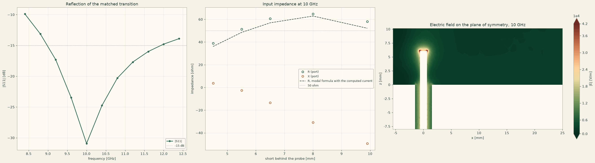
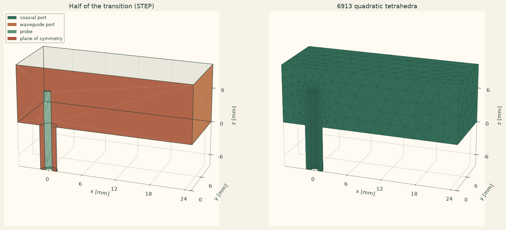

Docs › Examples › Coaxial probe to waveguide transition
Microwaves, waveguides · 3D
Coaxial probe to waveguide transition
The inner conductor of a 50-ohm coaxial line reaches into a shorted WR-90 waveguide and launches its TE10 wave, matched at 10 GHz by probe length and short.
Run locally with OneSimulation. The example downloads are free. Running them requires an activated runtime. Runtime Alpha 0.2.1a7 · CPython 3.13 on macOS (Apple Silicon), Ubuntu 22.04 (x86-64), and Windows x64. Installation and activation · View pilot plans. Scope of the reference checks.

What it computes
OneSimulation solves half the transition with a magnetic wall on its plane of symmetry and second-order Nédélec elements; the coaxial end is a TEM port whose mode and characteristic impedance come from the electrostatic potential of its cross-section, the guide end a waveguide port with the computed TE10 mode, and one factorization per frequency gives both S-parameters with the coaxial reference plane moved to the guide wall; a study of the short compares the input resistance with the modal formula evaluated with the probe current from Ampère's law. The script that builds the STEP files comes with the notebook.
What it checks
|S11| = -30.9 dB at 10 GHz and below -15 dB from 9.2 to 11.6 GHz; |S11|^2 + |S21|^2 = 1 and S12 = S21 to 1e-13; the coaxial port has 50.27 ohm (closed form 49.97 ohm); the input impedance 51.4 - 2.7j ohm moves by 0.5 ohm on a mesh of 1.7 times the cells; for shorts from 4.5 to 9.9 mm the modal formula with the computed current stays 3-10 % below the resistance at the port.
Geometry
The notebook starts at the import of the CAD files coaxial_probe_waveguide_transition.step, coaxial_probe_waveguide_transition_short_4p5.step, coaxial_probe_waveguide_transition_short_6p5.step, coaxial_probe_waveguide_transition_short_8p0.step, coaxial_probe_waveguide_transition_short_9p9.step: STEP (AP242), readable by any CAD program, with the names of the faces that the boundary conditions use. Put them next to the notebook.

The geometry script
The script coaxial_probe_waveguide_transition_geometry.py builds the geometry with the CAD objects of OneSimulation and writes the files. Change a dimension there, run it, and run the notebook again.
"""Geometry of the OneSimulation example "Coaxial probe to waveguide transition".
Builds with the CAD objects of OneSimulation one half of a coaxial-to-waveguide transition, cut along
its plane of symmetry y = 0: a WR-90 rectangular waveguide (22.86 mm x 10.16 mm, half width
11.43 mm) along x, shorted behind the probe, and an air-filled 50-ohm coaxial line (inner radius
0.65 mm, outer radius 1.4956 mm) entering from below through the lower broad wall, whose inner
conductor reaches 6.1 mm up into the guide as a probe. The matched transition, with the short
5.5 mm behind the probe, is coaxial_probe_waveguide_transition.step; the same transition with the
short 4.5, 6.5, 8.0 and 9.9 mm (a quarter guide wavelength at 10 GHz) behind the probe is
coaxial_probe_waveguide_transition_short_<mm>.step (4p5, 6p5, 8p0, 9p9). Faces: coax_port (the
coaxial end, z = -8 mm), guide_port (the waveguide end, x = 25 mm), probe (the inner conductor),
symmetry (the cut plane y = 0) and metal (all other walls, with the short).
"""
import numpy as np
from onesim.cad.d3 import Box, Cylinder
a, b, run = 0.02286, 0.01016, 0.025
inner, outer, coax, probe = 0.00065, 0.00065 * np.exp(50 / 60), 0.008, 0.0061
near = lambda value, target: abs(value - target) < 1e-9
def transition(backshort):
half = Box(
length=backshort + run + 0.01,
width=a,
height=b + coax + probe,
origin=(-backshort - 0.005, 0.0, -coax - 0.001),
)
guide = Box(
length=backshort + run, width=a / 2, height=b, origin=(-backshort, 0.0, 0.0)
)
line = Cylinder(radius=outer, length=coax + 0.001, origin=(0.0, 0.0, -coax))
pin = Cylinder(radius=inner, length=coax + probe, origin=(0.0, 0.0, -coax))
air = (guide | (line & half)) - pin
air = air.grouped(
coax_port=air.select(
faces=lambda face: face.kind == "plane" and near(face.center[2], -coax)
),
guide_port=air.select(
faces=lambda face: face.kind == "plane" and near(face.center[0], run)
),
symmetry=air.select(
faces=lambda face: face.kind == "plane" and near(face.center[1], 0.0)
),
probe=air.select(
faces=lambda face: np.hypot(face.center[0], face.center[1]) < inner * 1.01
and face.center[2] > -coax + 1e-9
),
)
faces = air.boundaries
named = faces.coax_port | faces.guide_port | faces.symmetry | faces.probe
return air.grouped(
metal=air.select(faces=lambda face: face.id not in named.members)
)
transition(0.0055).save("coaxial_probe_waveguide_transition.step")
for millimetres in (4.5, 6.5, 8.0, 9.9):
transition(millimetres * 1e-3).save(
f"coaxial_probe_waveguide_transition_short_{millimetres:.1f}".replace(".", "p")
+ ".step"
)The notebook
The complete notebook, cell by cell. Run it to produce the figures and the comparison printout.
The most common way into a rectangular waveguide is a coaxial connector on its broad wall: the inner conductor continues into the guide as a straight probe, parallel to the electric field of the TE\(_{10}\) wave, and a short circuit behind the probe sends the wave that starts backwards forward again. The probe length sets the resistance the coaxial line sees; the distance to the short sets the reactance. With the short a quarter guide wavelength behind it, a probe of this size is strongly capacitive; moving the short closer adds the inductance of a short-circuited guide and matches the transition.
Here an air-filled 50 Ω line (inner radius 0.65 mm) enters a WR-90 guide (\(a=22.86\) mm, \(b=10.16\) mm); the probe is \(d=6.1\) mm long and the short \(s=5.5\) mm behind it, found by a short parameter study of probe length and short for a match at 10 GHz. The transition is symmetric about the plane through the probe and the guide axis; only one half is modelled, with a magnetic wall on the plane of symmetry. OneSimulation solves the time-harmonic Maxwell equation
with second-order Nédélec elements. The coaxial end is a TEMPort: it computes the TEM mode of its cross-section from the electrostatic potential between the probe and the outer conductor, with its characteristic impedance. The guide end is a SectionWaveguidePort with the computed TE\(_{10}\) mode of the half guide. scattering_matrix feeds each port in turn, returns all S-parameters from one factorization and moves the reference plane of the coaxial port to the wall of the guide.
| faces | condition | |---|---| | coax_port | TEM port, signal conductor probe | | guide_port | waveguide port, TE\(_{10}\) | | probe, metal | perfect electric conductor | | symmetry | perfect magnetic conductor |
Reference (R. E. Collin, Field Theory of Guided Waves, 2nd ed., IEEE Press 1991, §7.1; D. M. Pozar, Microwave Engineering, 4th ed., §4.7). A current \(I(z)\) along the probe on the centre line of the guide excites the TE\(_{10}\) wave with the amplitude \(A=-\frac{Z_{TE}}{ab}\int_0^d I\,\mathrm dz\), \(Z_{TE}=\eta_0k_0/\beta\). Only this wave carries power, and with the short at \(s\) behind the probe it goes forward only: the input resistance referred to the current \(I_0\) at the base is
for any current on the probe; the classical estimate takes the current of an open line, \(\int I\,\mathrm dz=I_0\tan(k_0d/2)/k_0\). The reactance comes from the waves that do not propagate and has no such simple form. The study of the short below compares the computed resistance with this formula, evaluated with the computed probe current (Ampère's law around the probe). A lossless reciprocal two-port further has \(S_{12}=S_{21}\) and \(|S_{11}|^2+|S_{21}|^2=1\).
import numpy as np
from onesim.cad.d2 import Plane
from onesim.cad.exchange import load
from onesim.materials import VACUUM_PERMEABILITY, VACUUM_PERMITTIVITY
from onesim.materials.electromagnetic import IsotropicElectromagneticMaterial
from onesim.meshing import LocalRefinement, TetrahedralMesher
from onesim.numerics import Numerics
from onesim.numerics.fem import FiniteElement, Nedelec
from onesim.numerics.linear import ComplexSparseDirect
from onesim.physics.electromagnetics import (
FrequencyDomainMaxwell,
PerfectElectricConductor,
PerfectMagneticConductor,
SectionWaveguidePort,
TEMPort,
scattering_matrix,
scattering_parameters,
)
from onesim.simulation import Problem, Simulation
from onesim.visualization import plots, theme
theme.set()
light, eta0 = 1 / np.sqrt(VACUUM_PERMEABILITY * VACUUM_PERMITTIVITY), np.sqrt(
VACUUM_PERMEABILITY / VACUUM_PERMITTIVITY
)
a, b, d, s, pin, coax = 0.02286, 0.01016, 0.0061, 0.0055, 0.00065, 0.008Geometry and mesh
load reads the matched half transition with its named faces, and the same transition with the short at 4.5, 6.5, 8.0 and 9.9 mm (a quarter guide wavelength at 10 GHz). Second-order tetrahedra of 2.5 mm fill the guide (twelve per wavelength at 10 GHz), refined to 0.35 mm on the probe.
part = load("coaxial_probe_waveguide_transition.step")
faces = part.boundaries
shorts = {5.5: part} | {
mm: load(
f"coaxial_probe_waveguide_transition_short_{mm:.1f}".replace(".", "p") + ".step"
)
for mm in (4.5, 6.5, 8.0, 9.9)
}
mesher = lambda body: TetrahedralMesher(
target_size=2.5e-3,
refinements=(LocalRefinement(region=body.boundaries.probe, target_size=0.35e-3),),
).generate(body)
mesh = mesher(part)
view = plots.Camera(elevation=20, azimuth=-70)
fig = plots.figure(1, 2, size=(14, 6))
plots.geometry(
part,
selection={
"coaxial port": faces.coax_port,
"waveguide port": faces.guide_port,
"probe": faces.probe,
"plane of symmetry": faces.symmetry,
},
labels=False,
camera=view,
length_unit="mm",
title="Half of the transition (STEP)",
ax=fig[0],
)
plots.mesh(
mesh,
groups=("all",),
legend=False,
camera=view,
length_unit="mm",
title=f"{mesh.cell_count} quadratic tetrahedra",
ax=fig[1],
)
plots.show()Model
simulation builds the model of a transition at one frequency with its two ports. The sweep of the matched transition covers the single-mode band of the guide, 8.4 to 12.4 GHz. The half model carries half the current at the same voltage, so the impedances of the full transition are half those of the half model (the characteristic impedance of the port included). Impedances are given as \(R+\mathrm jX\) in the engineering convention (\(X>0\) inductive); the model itself uses \(e^{-i\omega t}\).
simulation = lambda f, body=part, grid=mesh, power=0.0: (
Simulation(
problem=Problem(
name="Coaxial probe transition",
geometry=body,
physics=(
m := FrequencyDomainMaxwell(
domain=body.volume,
frequency=f,
material=IsotropicElectromagneticMaterial(),
phasor_convention="exp(-i*omega*t)",
amplitude_convention="peak",
),
),
boundary_conditions=(
TEMPort(
physics=m,
boundary=body.boundaries.coax_port,
signal=body.boundaries.probe,
incident_power=power,
),
SectionWaveguidePort(
physics=m, boundary=body.boundaries.guide_port, modes=1
),
PerfectElectricConductor(
physics=m, boundary=body.boundaries.metal | body.boundaries.probe
),
PerfectMagneticConductor(physics=m, boundary=body.boundaries.symmetry),
),
),
mesh=grid,
numerics=Numerics(
spatial=FiniteElement(element=Nedelec(order=2)),
linear_solver=ComplexSparseDirect(),
),
),
m,
)
frequencies = np.round(np.arange(8.4e9, 12.41e9, 0.4e9), -6)
sweep = {
f: scattering_matrix(*simulation(f), reference_planes=(coax, 0.0))
for f in frequencies
}Results
The characteristic impedance of the coaxial port, the S-parameters, reciprocity and power balance over the band, and the input impedance of the full transition at the wall, \(Z_{in}=Z_0(1+S_{11})/(1-S_{11})\).
beta = lambda f: np.sqrt((2 * np.pi * f / light) ** 2 - (np.pi / a) ** 2)
z_te = lambda f: eta0 * (2 * np.pi * f / light) / beta(f)
z0 = sweep[frequencies[0]].impedances[0].real / 2
impedance = {f: np.conj(z0 * (1 + S[0, 0]) / (1 - S[0, 0])) for f, S in sweep.items()}
dB = lambda x: 20 * np.log10(abs(x))
print(
f"coaxial port: characteristic impedance {z0:.2f} ohm, closed form eta0 ln(b/a)/(2 pi) = {eta0 * 50 / 60 / (2 * np.pi):.2f} ohm"
)
print("f [GHz] |S11| [dB] |S21| |S11|^2+|S21|^2-1 |S12-S21| Z_in [ohm]")
for f, S in sweep.items():
print(
f"{f / 1e9:6.2f} {dB(S[0, 0]):10.1f} {abs(S[1, 0]):9.4f} {abs(S[0, 0]) ** 2 + abs(S[1, 0]) ** 2 - 1:16.1e} {abs(S[0, 1] - S[1, 0]):12.1e}"
f" {impedance[f].real:7.2f} {impedance[f].imag:+7.2f}j"
)
band = [f for f in frequencies if dB(sweep[f][0, 0]) < -15]
print(
f"at 10 GHz |S11| = {dB(sweep[10e9][0, 0]):.1f} dB; |S11| below -15 dB from {min(band) / 1e9:.1f} to {max(band) / 1e9:.1f} GHz "
f"of the sweep ({(max(band) - min(band)) / 1e8:.0f} % of 10 GHz)"
)The short and the modal theory
At 10 GHz each of the five transitions is fed with 1 W (0.5 W in the half model). Ampère's law on a circle of 1.5 probe radii, \(I(z)=2\rho\int_0^\pi H_\varphi\,\mathrm d\varphi\) on the half circle, gives the current along the probe, the modal formula with it the input resistance; the port reports it independently, from the reflection moved to the wall, \(\Gamma=S_{11}e^{-2\mathrm ik_0\ell}\) over the \(\ell=8\) mm of coaxial line. A finer mesh (1.8 mm, 0.35 → 0.25 mm on the probe) checks the matched transition.
heights, ring = np.linspace(0.0, d, 60), np.linspace(0.0, np.pi, 25)
circle = np.array(
[[1.5 * pin * np.cos(p), 1.5 * pin * np.sin(p), z] for z in heights for p in ring]
)
ampere = (
lambda r, m: 3
* pin
* np.trapezoid(
np.einsum(
"hpd,pd->hp",
r.field(m.magnetic_flux_density).evaluate(circle).reshape(60, 25, 3),
np.column_stack((-np.sin(ring), np.cos(ring), 0 * ring)),
),
ring,
axis=1,
)
/ VACUUM_PERMEABILITY
)
runs = {
mm: (lambda run: (run[0].solve_stationary(), run[1]))(
simulation(10e9, body, mesh if mm == 5.5 else mesher(body), power=0.5)
)
for mm, body in sorted(shorts.items())
}
study = {}
for mm, (r, m) in runs.items():
gamma = scattering_parameters(r, m)[(0, 0)] * np.exp(
-2j * 2 * np.pi * 10e9 / light * coax
)
current = ampere(r, m)
mean = abs(np.trapezoid(current, heights) / current[0]) / d
study[mm] = (
np.conj(z0 * (1 + gamma) / (1 - gamma)),
2
* z_te(10e9)
/ (a * b)
* np.sin(beta(10e9) * mm * 1e-3) ** 2
* (mean * d) ** 2,
mean,
)
print(
"short [mm] beta s [deg] Z_in [ohm] |S11| [dB] R modal, computed current [ohm] mean I / I0"
)
for mm, (z, modal, mean) in study.items():
print(
f"{mm:8.1f} {np.degrees(beta(10e9) * mm * 1e-3):12.1f} {z.real:7.2f} {z.imag:+7.2f}j {dB((z - 50) / (z + 50)):12.1f} {modal:20.2f} ({modal / z.real - 1:+.1%})"
f" {mean:14.3f}"
)
print(
f"sinusoidal current: mean I / I0 = {np.tan(np.pi * 10e9 * d / light) / (2 * np.pi * 10e9 / light) / d:.3f}"
)
fine = TetrahedralMesher(
target_size=1.8e-3,
refinements=(LocalRefinement(region=faces.probe, target_size=0.25e-3),),
).generate(part)
refined = scattering_matrix(*simulation(10e9, part, fine), reference_planes=(coax, 0.0))
refined = np.conj(
refined.impedances[0].real / 2 * (1 + refined[0, 0]) / (1 - refined[0, 0])
)
print(
f"mesh study at 10 GHz: Z_in = {impedance[10e9].real:.2f} {impedance[10e9].imag:+.2f}j ohm ({mesh.cell_count} tetrahedra), "
f"{refined.real:.2f} {refined.imag:+.2f}j ohm ({fine.cell_count} tetrahedra)"
)The short changes the current on the probe (its mean falls from 0.73 to 0.57 of the base current as the short moves from 4.5 mm to a quarter wavelength), and the resistance follows: the modal formula with the computed current stays 3 to 10 % below what the port reports, at every position of the short. The formula counts only the current on the probe; the fields in the opening of the coaxial line and the step from the line into the guide add to what the port measures. The reactance swings from capacitive at a quarter wavelength to inductive close to the short; at 5.5 mm it nearly vanishes, which is the match.
Figure
Left: reflection of the matched transition over the band. Middle: the input impedance against the position of the short at 10 GHz, with the modal resistance. Right: the electric field on the plane of symmetry of the matched transition at 10 GHz: the TEM wave of the coaxial line turns into the TE\(_{10}\) wave that travels towards the port.
result, m = runs[5.5]
positions = np.array(sorted(study))
fig = plots.figure(1, 3, size=(24, 6.5))
plots.line(
frequencies / 1e9,
{"|S11|": [dB(S[0, 0]) for S in sweep.values()]},
markers=True,
hlines={"-15 dB": -15.0},
xlabel="frequency [GHz]",
ylabel="|S11| [dB]",
title="Reflection of the matched transition",
legend="lower right",
ax=fig[0],
)
plots.line(
points={
"R (port)": (positions, [study[mm][0].real for mm in positions]),
"X (port)": (positions, [study[mm][0].imag for mm in positions]),
},
reference={
"R, modal formula with the computed current": (
positions,
[study[mm][1] for mm in positions],
)
},
hlines={"50 ohm": 50.0},
xlabel="short behind the probe [mm]",
ylabel="impedance [ohm]",
title="Input impedance at 10 GHz",
legend="center right",
ax=fig[1],
)
plots.section(
result.field(m.electric_field),
plane=Plane(origin=(0.0, 5e-5, 0.0), normal=(0.0, 1.0, 0.0)),
component=lambda E, p: np.linalg.norm(np.abs(E), axis=1),
limits="robust",
subdivisions=2,
length_unit="mm",
label="|E| [V/m]",
title="Electric field on the plane of symmetry, 10 GHz",
ax=fig[2],
)
plots.show()Going further
Change the probe length probe in coaxial_probe_waveguide_transition_geometry.py: a longer probe raises the resistance and needs the short closer to cancel its capacitance. A disc on the probe tip (a top hat) or a thicker probe widens the band of good match.